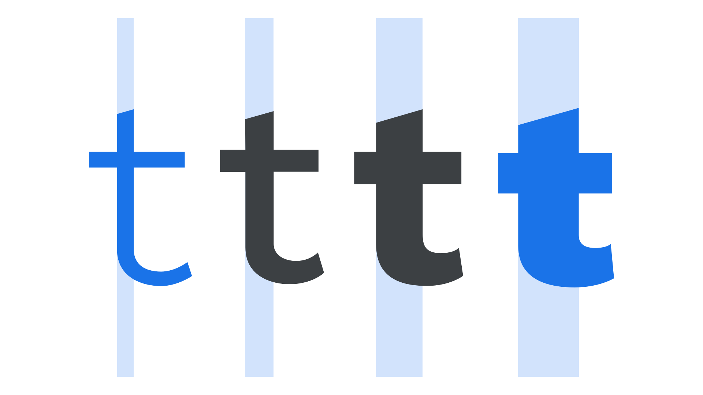

Weight
By Google Fonts Knowledge contributors · Google Fonts Knowledge.
Original article · Source on GitHub · CC BY-SA 4.0. Text, illustrations and existing credits reproduced from the licensed Knowledge repository. Open Shelf adapted the layout and links; these adaptations are also CC BY-SA 4.0. No endorsement implied.
Weight is the overall thickness of a typeface’s stroke in any given font. The most common weights are regular and bold, but weights can cover extremes from the very light to the very heavy. With the weight axis in variable fonts, that number is effectively unlimited.

Typically, font weights range from hairline and extra light at the lightest (i.e., thinnest) end of the spectrum, all the way to black or ultra at the heaviest (i.e., thickest). Note: the actual naming of individual weights is arbitrary and down to the individual type designer or type foundry.
Although different weights have traditionally been separated out into individual font files, variable fonts allow foundries to distribute all weights in one unified file. Variable fonts have also given freedom to the end user (the designer) to use bespoke weights in between the pre-defined instances by manipulating a variable font’s weight axis.